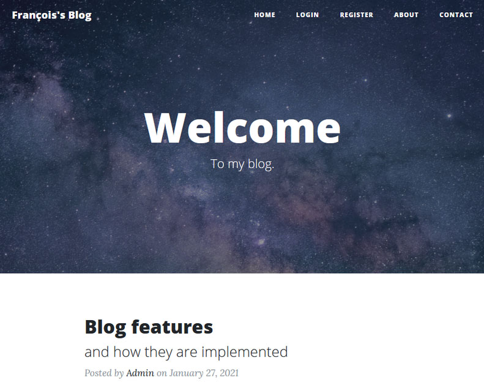
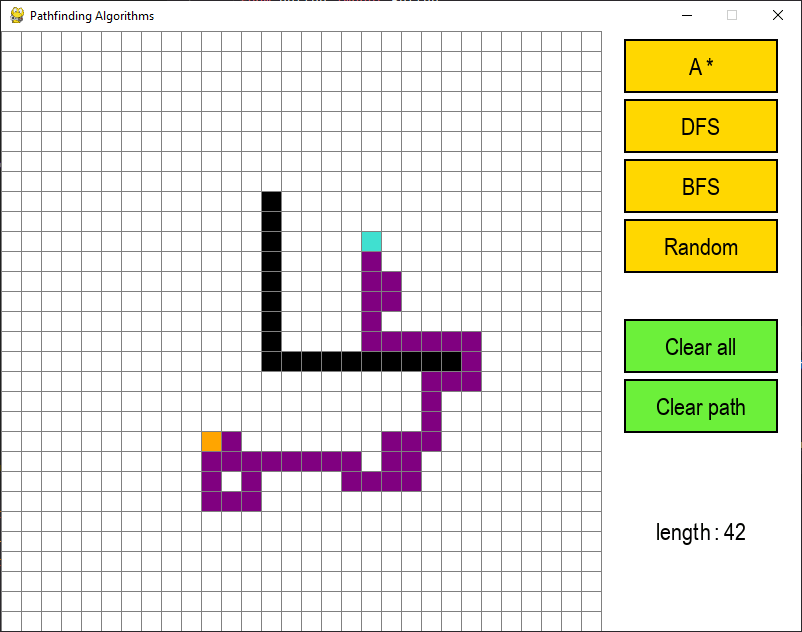

Securing developer platforms, one automated control at a time.
I'm François — a Platform DevSecOps Engineer specialized in securing developer platforms like GitLab and Artifactory at scale, through Infrastructure-as-Code, IAM and automated security controls.
View projects
Get in touch
photo
Open to work
Strong expertise in Python, automation and cloud — with a proven track record of reducing operational overhead and improving security posture in large environments.
GitLab & ArtifactoryIAMTerraformAWSDevSecOps
WHAT I CAN BRING TO YOUR TEAM
Securing developer platforms at scale — through Infrastructure-as-Code, IAM and automated security controls.
40,000+
users secured across GitLab & Artifactory platforms
-75% time
provisioning time after automating IAM workflows
Zero disruption
large-scale migrations of roles, permissions & access
Basé sur ton CV — on affine le wording ensemble avant intégration finale.
CAPABILITIES
What I bring to a team
Platform Security & IAM
Securing developer platforms and enforcing governance at scale.
GitLab & ArtifactoryRBAC / IAMVault
Infrastructure as Code
Standardizing and auditing infrastructure through code.
TerraformAWSDocker
Automation & DevSecOps
Automating security controls into developer workflows.
Python asyncioGitLab CISecurity scanning
Basé sur ton CV (Platform DevSecOps Engineer) — certifications SAFe 6, KodeKloud, TryHackMe (top 2%) à valoriser aussi quelque part.
SELECTED WORK
A few things I've built
See all projects

5 captures
GoTrip — trip planning app
Plan multi-stop trips with shared itineraries and live budget tracking.
PythonReactPostgreSQL

Voir la démo
RainAlert — weather alert system
Real-time precipitation alerts via a scheduled data pipeline and push notifications.
PythonAWS LambdaCron
Captures d'exemple reprises de l'ancien site — à remplacer par de vraies captures/vidéos de GoTrip, Horizon, RainAlert. Un clic ouvrirait une galerie complète (comme l'ancien tourniquet).